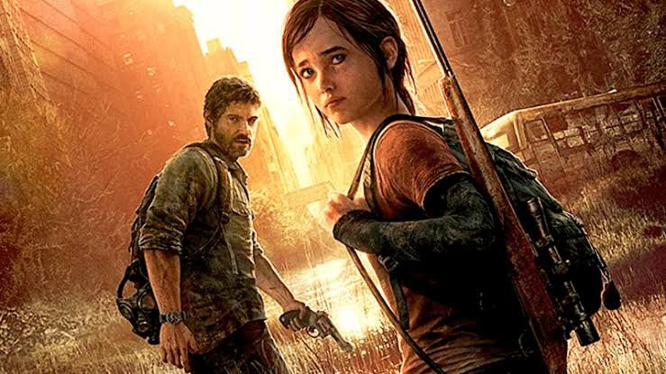
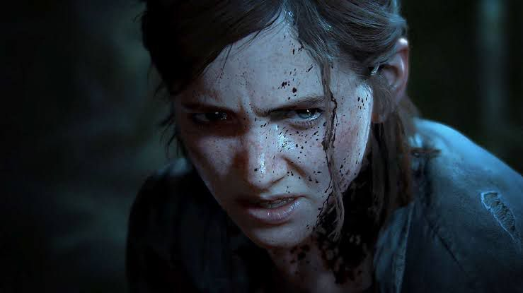

The Last of Us
O Primeiro Jogo
Desde que chegou ao mercado dos games em 2013, The Last of Us conquistou até mesmo o público mais exigente e durão, levando grande parte às lágrimas no final da experiência do 1º jogo, que conta com a história de um apocalipse de fungos. Acompanhamos Joel, que precisa levar Ellie, uma menina imune, até médicos que podem criar uma cura. Com gameplay intensa e reviravoltas emocionantes, o jogo se destaca pelo enredo, gráficos e decisões que dividem o público, mas que são imprescindíveis para o futuro da história.
O Segundo Jogo
No segundo jogo, a história continua 5 anos depois, agora lidando com as consequências do primeiro. Novos personagens e escolhas dolorosas colocam o jogador frente a frente com o tema da vingança. O contraste entre amor, ódio e o "olho por olho" torna a experiência ainda mais impactante para os jogadores.
O Seriado
O sucesso do jogo levou à produção da série pela HBO, fiel à história original. A série recria com detalhes cada momento importante, e ainda expande o universo com histórias de personagens secundários que haviam ficado com suas histórias na gameplay sem muito aprofundamento. O seriado é um presente para os jogadores que amaram os jogos e hoje podem ver um outro lado da história, sendo contado de forma fidedigna, porém, com o gostinho de assistir tudo que foi jogado, na tela da tv. Pedro Pascal e Bella Ramsey brilham nos papéis de Joel e Ellie, apesar de duras críticas à atriz que interpreta Ellie. Hoje, com sua segunda temporada sendo apresentada aos fãs, contando a história do segundo jogo, teremos a apresentação de uma nova e importante personagem, Abby. Os fãs torcem que a história do segundo jogo seja passada para as telas de forma tão emocionante quanto o jogo, e que atores e atrizes desenvolvam ainda mais a atuação, trazendo toda a emoção da gameplay.